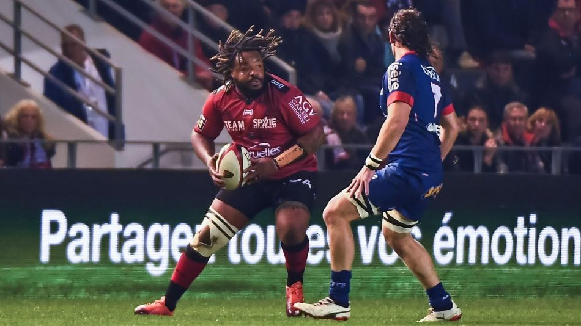

Toulon s'impose avec le bonus offensif face à Grenoble

TOP 14 - Bonus offensif obtenu en toute fin de match grâce à un essai de Guilhem Guirado. Les 2 autres essais ont été marqués par Mathieu Bastareaud et Josua Tuisova.
La manière est un concept toujours abstrait sur la Rade mais le RCT a bien obtenu un résultat capital dans son championnat du maintien. Redevenu barragiste après la victoire surprise d’Agen à Castres (13-16), Toulon devait impérativement s’imposer pour s’enlever un brin de pression et a même été chercher la cerise sur le gâteau avec le bonus offensif (22-3). C’est Guilhem Guirado qui a inscrit le troisième essai de son équipe sur le fil (80e), Mathieu Bastareaud (48e) et Josua Tuisova (55e) ayant marqué avant lui. Grâce à ces cinq points, le RCT est dixième au soir de cette onzième journée.
Ce bonus, bien peu de spectateurs de Mayol auraient osé l’espérer en fin de première période, déjà bien heureux de ne pas voir les leurs rentrer Fanni au vestiaire suite à une pénalité réussie par Belleau (3-3). Cette première occasion de scorer clôturant, après la sirène, une première période où le RCT a développé sensiblement le même plan de jeu que les Bleus une semaine plus tôt face aux Fidji (14-21). Un jeu à une passe ou moins que les Grenoblois n’ont eu que peu de peine à contrer.
Grenoble a perdu le fil
Comme les Bleus contre les Fidji, Toulon a réussi à tirer profit des qualités de Guilhem Guirado en queue de ballon porté. Sauf que, contrairement aux hommes de Jacques Brunel, ceux de Patrice Collazo avaient déjà le match gagné quand leur talonneur s’est illustré. Et ce grâce à une deuxième mi-temps bien moins sérieuse de la part du promu. Sur le premier essai toulonnais, l’ouvreur Franck Pourteau impulse le contre varois en envoyant une passe dans les chaussettes d’un partenaire sur un lancement de jeu simple, puis, quelques secondes plus tard, se fait contrer dans son en-but sur une tentative de dégagement.
Sur le deuxième essai, l’arrière Gaëtan Germain semble se jeter sciemment sur le côté pour éviter de prendre Josua Tuisova plein fer, ouvrant ainsi la voie à l’ailier fidjien. Sortis de leur match en quelques minutes, les Isérois auraient pu rentrer les valises plus chargées si Toulon n’avait pas rendu des munitions précieuses, notamment en touche. Un RCT qui ne pourra surtout pas parler de match référence, seulement d’excellente opération.